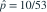
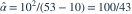

负二项模型的均值为  ，方差为
，方差为  。10 个观测值之和为 100、平方和为 1530。用前两阶原点矩估计 α，约为？
。10 个观测值之和为 100、平方和为 1530。用前两阶原点矩估计 α，约为？
，方差为 。10 个观测值之和为 100、平方和为 1530。用前两阶原点矩估计 α，约为？- A2.33
- B1.59
- C1.89
- D3.00
我已思考，展开答案与解析
正确答案：A
- 经验均值为 10，经验中心二阶矩为 ，故

，
。
易错提醒先明确分布参数、独立性和统计量的定义，再进行计算。
用户提供练手卷 · 原第 22 题；题目 PDF 第 4 页
单选改编；题干与选项已重新编排